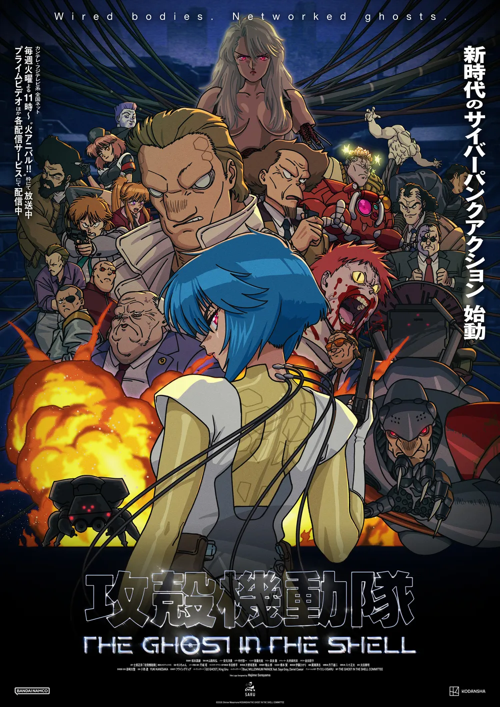
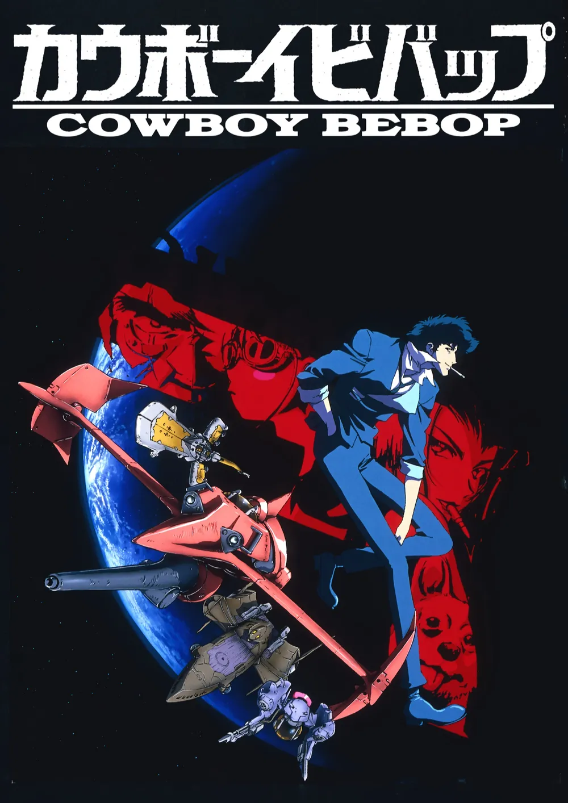
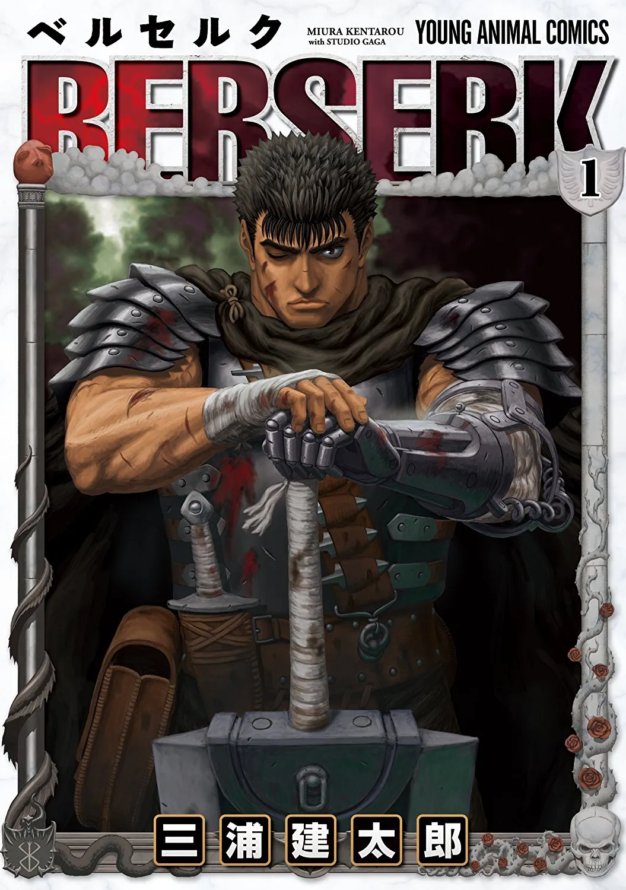

1. 『공각기동대』
(1995)
정체성과 자아의 경계
- 신체, 기억, 정보가 바뀌는 고도 정보화 시대에서 '나(정체성)'라는 존재는 유지되는가?
- 영혼(Ghost)과 기계 육체(Shell) 사이의 철학적 경계를 질문하여 할리우드 SF 장르에 지대한 영향을 미침.

2. 『카우보이 비밥』
(1998)
장르 융합과 상실의 묘사
- 스페이스 오페라 세계관에 누아르, 하드보일드, 재즈 음악을 완벽하게 융합함.
- 옴니버스 형식으로 전개되는 허무주의 서사를 통해 인물들의 과거와 상실을 영화적으로 묘사함.

3. 『베르세르크』
(1980s 후반~)
폭력과 운명 속의 실존
- 극단적인 폭력과 운명이라는 조건 속에서 개인의 의지, 동료 관계, 삶을 지속할 이유를 탐구.
- 『데빌맨』이 던진 인간성의 문제를 독자적인 다크 판타지로 심화시킴.